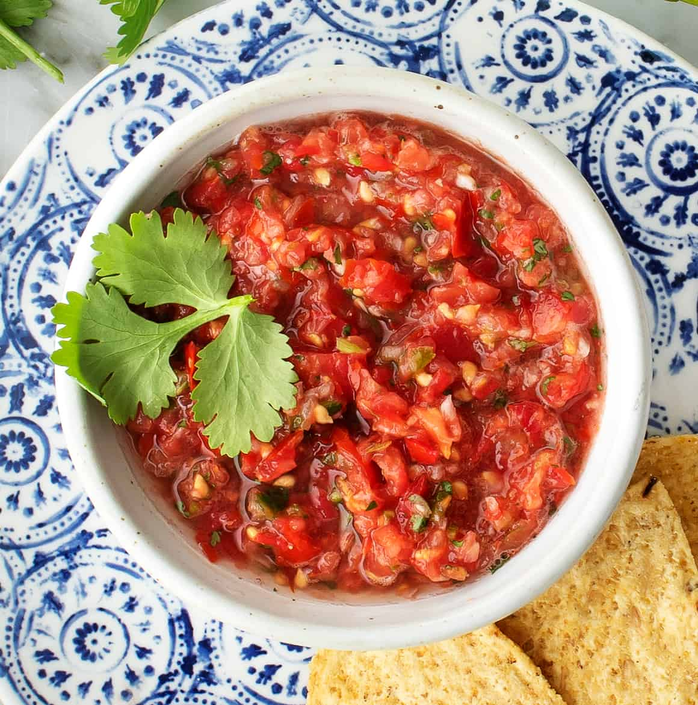

Salsa

Ingredients
- 5 Tomatoes
- 1 Red Onion
- 2 Cloves Garlic
- 1 bundle Cilantro
- 3 Limes
- ground cumin
- salt
- pepper
Cooking Instructions
-
Place tomatoes, onion, garlic, Cilantro into a blinder and pulse blend until
its chunky.
-
squeeze lime and add salt, cumin and pepper to taste, pulse to mix
and serve when its the way you like.